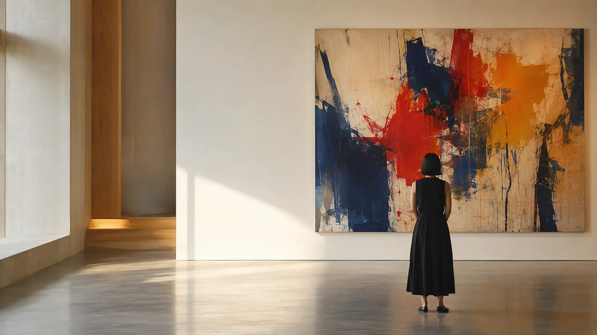

ARTWEY STUDIO / THE MOVING IMAGE
Quand l’art
prend le temps.
Ateliers, visites, installations, restaurations et entretiens. Studio donne aux œuvres une autre durée et au public une autre proximité.

ARTWEY STUDIO / FEATURE